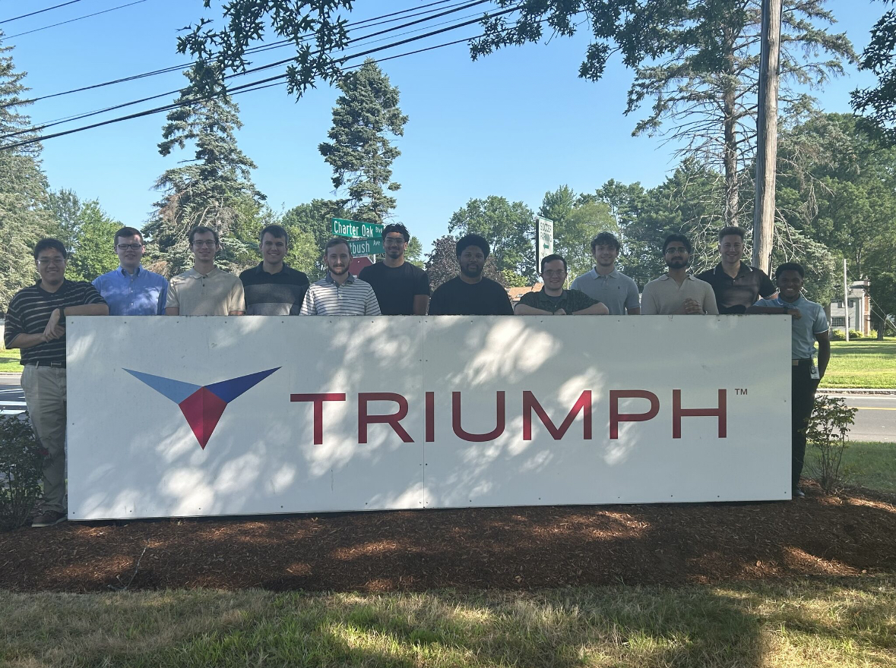
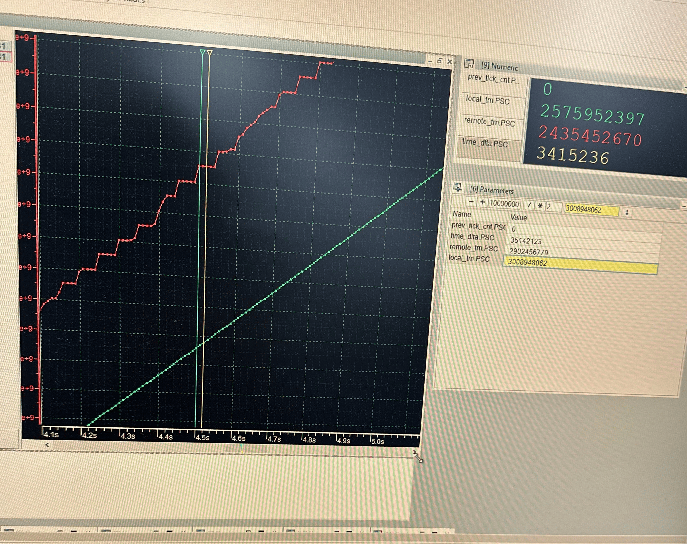

Software Engineer Intern : May 2025 - Aug 2025

I worked at Triumph Group as a Software Engineer Intern. The company works on producing Engine Control Units and Fuel Pumps
The work I have done includes:
- Contributed to avionics software development under DO-178B/C guidelines, updating compliance documentation to support certification readiness
- Implemented channel synchronization and Major Frame timing on dual-channel ECU hardware using Green Hills INTEGRITY RTOS and MPSoC architecture
- Used CANape to monitor timing signals and validate synchronization behavior across channels in a real-time embedded environment

Additionally, I have gotten to work with tools such as CANape, Oscilloscopes, Function Generators, Green Hills Integrity, and Xilinx MPSoC.